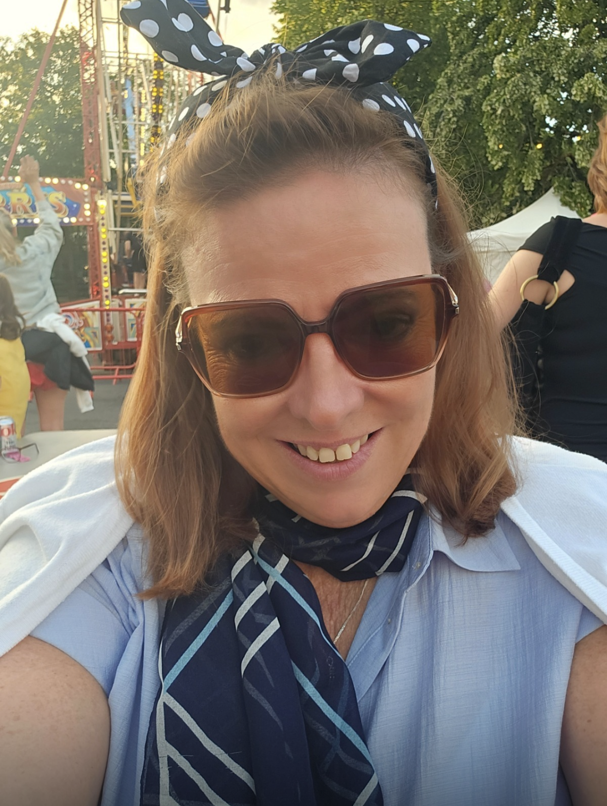

Maria
<“As a single mum and former nurse, life brought more challenges than i ever expected. After losing my mum, her final words to me were, 'Go for it and make it work.' That gave me the courage to stat. This business has given me more freedom, the chance to travel, a more secure future for my family and, most importantly, the confidence to believe in myself again."
Maria - Single parent - Former Nurse